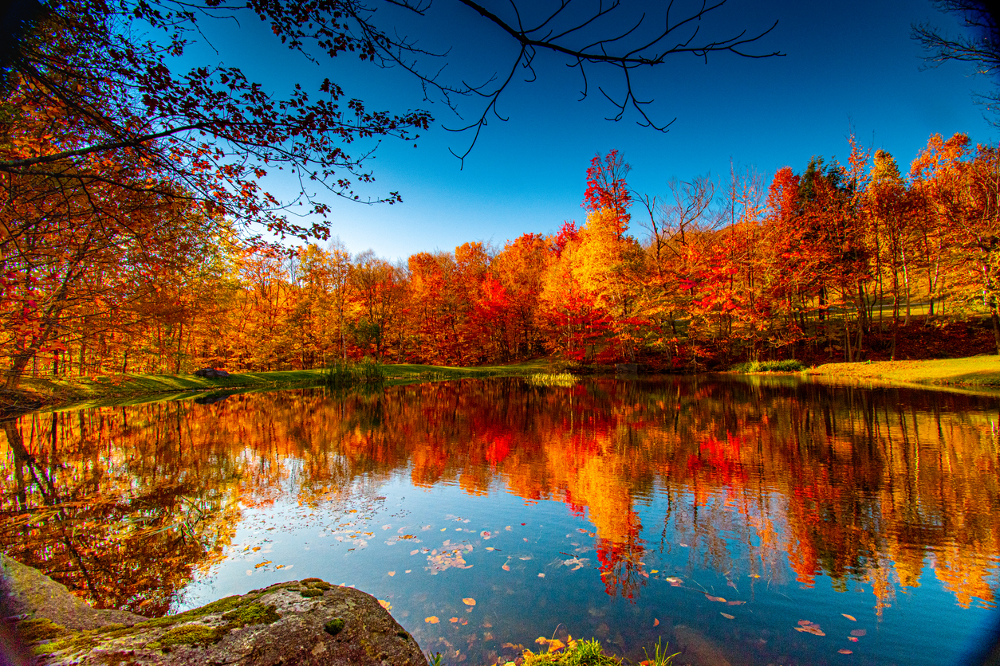

Jest jedną z czterech podstawowych pór roku w przyrodzie, w strefie klimatu umiarkowanego. Charakteryzuje się umiarkowanymi temperaturami powietrza z malejącą średnią dobową oraz (w przypadku Polski) stosunkowo dużym w skali roku opadem atmosferycznym. W świecie roślin i zwierząt jest to okres gromadzenia zapasów przed zimą.


Ciekawostki
- Jesień jest jedną z czterech podstawowych pór roku w przyrodzie strefy klimatu umiarkowanego.
- Rozróżnia się jesień klimatyczną i astronomiczną.
- Na półkuli południowej wszystkie te zjawiska i daty przesunięte są o pół roku.
- Wczesna jesień jest porą, w której dojrzewa wiele owoców.
- Jesienią właściwą drzewa zaczynają przechodzić w okres zimowego spoczynku, objawiający się żółknięciem liści.